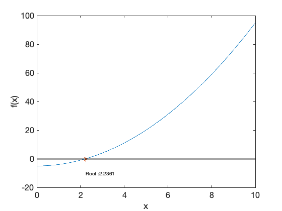

f = @(x) x.^2 -5;
xL = 0;
xh = 10;
tol = 1e-5;
fL = f(xL);
fh = f(xh);
if sign(fL) == sign(fh)
error('f(xL and f(xh) must have different signs')
end
x = linspace(xL, xh, 1000);
figure(1); clf(1)
plot(x, f(x))
xlabel('x')
ylabel('f(x)')
set(gca,'Fontsize', 16)
hold on
yline(0,'k','Linewidth', 2)
count = 0;
xr = 0;
xrold = 1;
while abs(xr-xrold)>tol
count = count + 1;
xrold = xr;
xr = xL - fL*(xh-xL)/(fh-fL);
if sign(f(xL)) == sign(f(xr))
xL = xr;
fL = f(xL);
else
xh = xr;
fh = f(xh);
end
end
root = xr;
plot(root,f(root), '*')
text(root, -10, ['Root :', num2str(root)])
disp('Linear Interpolation'); disp(count)
Linear Interpolation
28
